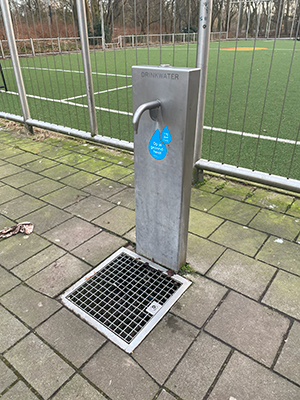
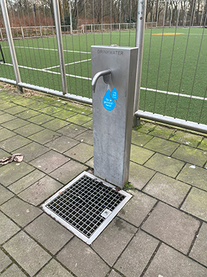

Overal Water
Overal Water is een website die de locaties van watertappen en waterhappertjes laat zien. Dit is superhanding voor als je dorst hebt buiten, maar dit is ook heel goed voor het milieu.
Overal Water is een website die de locaties van watertappen en waterhappertjes laat zien. Dit is superhanding voor als je dorst hebt buiten, maar dit is ook heel goed voor het milieu.
